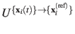
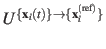
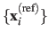
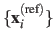
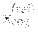
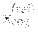

The block rmsd {...} defines the root mean square replacement
(RMSD) of a group of atoms with respect to a reference structure. For
each set of coordinates
 , the colvar component rmsd calculates the
optimal rotation

that best superimposes the coordinates
, the colvar component rmsd calculates the
optimal rotation

that best superimposes the coordinates
 onto a
set of reference coordinates
.
Both the current and the reference coordinates are centered on their
centers of geometry,
onto a
set of reference coordinates
.
Both the current and the reference coordinates are centered on their
centers of geometry,
 and
. The root mean square
displacement is then defined as:
and
. The root mean square
displacement is then defined as:
The optimal rotation
is calculated within the formalism developed in
reference [#!Coutsias2004!#], which guarantees a continuous
dependence of
with respect to
. The options for rmsd
are:
-
atoms
 Atom group
Atom group
Context: rmsd
Acceptable values: atoms {...} block
Description: Defines the group of atoms of which the RMSD should be calculated.
Optimal fit options (such as refPositions and
rotateReference) should typically NOT be set within this
block. Exceptions to this rule are the special cases discussed in
the Advanced usage paragraph below.
-
refPositions Reference coordinates
Context: rmsd
Acceptable values: space-separated list of (x, y, z) triplets
Description: This option
sets the reference coordinates. If only centerReference is on, the list can be a single (x, y, z) triplet; if also rotateReference is on, the list should be as long as the atom group. This option
is independent from that with the same keyword within the
atoms {...} block (see 4). The latter (and related fitting
options for the atom group) are normally not needed,
and should be omitted altogether except for advanced usage cases.
This component returns a positive real number (in Å).
Jérôme Hénin
2015-03-03